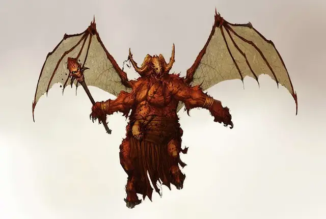

Оркус
Orcus
Огромное Исчадие (Демон), хаотично-злое, именной НИП

Класс Доспеха 17 (природный доспех, 20 с палочкой Оркуса )
Хиты 405 (30к12 + 210)
Скорость 40 футов, летая 40 футов
| мод | спас | ||
|---|---|---|---|
| СИЛ | 27 | +8 | +8 |
| ЛОВ | 14 | +2 | +10 |
| ТЕЛ | 25 | +7 | +15 |
| мод | спас | ||
|---|---|---|---|
| ИНТ | 20 | +5 | +5 |
| МДР | 20 | +5 | +13 |
| ХАР | 25 | +7 | +7 |
Навыки Восприятие +12, Магия +12
Сопротивление урону огонь, холод, электричество
Иммунитет к урону некротическая энергия, яд; дробящий, колющий, рубящий от немагических атак
Иммунитет к состояниям отравление, очарование, испуг, истощение
Чувства истинное зрение 120 футов, пассивное Восприятие 22
Языки Все, Телепатия 120 фт.
Опасность 26 (90000 опыта)
Бонус мастерства +8
Особенности
Палочка Оркуса. У палочки 7 зарядов, и любое из её свойств, требующее спасброска, имеет Сл 18. Держа её Оркус может потратить действие для того, чтобы наложить заклинание восставший труп [animate dead], усыхание [blight] или разговор с мёртвыми [speak with dead].
В качестве альтернативы этим заклинанием он может потратить 1 или более зарядов палочки, чтобы наложить с её помощью одно из его заклинаний: круг смерти [circle of death] (1 заряд), перст смерти [finger of death] (1 заряд) или слово силы: смерть [power word kill] (2 заряда).
Палочка восстанавливает 1к4 + 3 заряда ежедневно на рассвете.
Держа палочку Оркус может потратить действие для того, чтобы призвать нежить, чьи хиты в сумме не превышают 500. Эта нежить магически поднимается из земли или каким-либо другим образом возникает в незанятом месте в пределах 300 футов от Оркуса и подчиняется его приказам до тех пор, пока не будет уничтожена или до тех пор, пока он не отзовет ее потратив действие. Как только это свойство палочки будет использовано, его нельзя будет использовать снова до следующего рассвета.
Врождённое колдовство. Базовой характеристикой Оркуса является Харизма (Сл спасброска от заклинания 23, +15 к попаданию атаками заклинаниями). Он может накладывать следующие заклинания, не нуждаясь в материальных компонентах:
• Неограниченно: леденящее прикосновение [chill touch] (17-й уровень), обнаружение магии [detect magic].
• 3/день каждое: сотворение нежити [create undead], рассеивание магии [dispel magic].
• 1/день: остановка времени [time stop].
Легендарное сопротивление (3/день). Если Оркус проваливает спасбросок, он может вместо этого сделать спасбросок успешным.
Сопротивление магии. Оркус совершает с преимуществом спасброски от заклинаний и прочих магических эффектов.
Магическое оружие. Атаки оружием Оркуса являются магическими.
Повелитель нежити. Когда Оркус накладывает заклинание восставший труп [animate dead] или сотворение нежити [create undead], он выбирает круг, из ячейки которого будет считаться наложенным заклинание, и созданные им существа будут оставаться под его контролем неограниченное время. В дополнение к этому он может читать заклинание сотворение нежити [create undead] даже не ночью.
Действия
Мультиатака. Оркус совершает две атаки Палочкой Оркуса.
Палочка Оркуса. Рукопашная атака оружием: +19 к попаданию, досягаемость 10 фт., одна цель. Попадание: 21 (3к8 + 8) дробящего урона плюс 13 (2к12) урона некротической энергией.
Хвост. Рукопашная атака оружием: +17 к попаданию, досягаемость 10 фт., одна цель. Попадание: 21 (3к8 +8) дробящего урона плюс 18 (4к8) урона ядом.
Легендарные действия
Оркус может совершить 3 легендарных действия на выбор из перечисленных ниже вариантов. Лишь одно легендарное действие может быть совершено за один раз, и только в конце хода другого существа. Оркус восстанавливает истраченные действия в начале своего хода.
Хвост. Оркус совершает одну атаку хвостом.
Вкус мертвой жизни. Оркус накладывает заклинание леденящее прикосновение [chill touch] (17-й уровень).
Крадущаяся смерть (стоит 2-х действий). Оркус выбирает точку на земле, которую может видеть на расстоянии до 100 футов от него. Цилиндрический вихрь некротической энергии высотой 60 футов и радиусом 10 футов поднимается из этой точки и остается до конца следующего хода Оркуса.
Существа, находящиеся в этой зоне, уязвимы к урону некротической энергией.
Логово
Логово Оркуса расположено в городе-крепости Наратире [Naratyr], что находится на Танатосе [Thanatos] – слое Бездны, которым он правит, в окружении рва, питаемого рекой Стикс [River Styx]. Наратир – устрашающе тихий и холодный город, его улицы часто пустуют по несколько часов к ряду. В центральном костяном замке стены сделаны из плоти, а ковры сплетены из волос. В городе живет блуждающая нежить, и многие из ее представителей заняты постоянными битвами друг с другом.
Действия логова
По очереди инициативы 20 (при равной инициативе персонаж совершает действие прежде действия логова), Оркус может совершить действие в логове, чтобы создать один из следующих магических эффектов; он не может использовать один и тот же эффект два раунда подряд:
• Голос Оркуса громом проносится по логову. Из-за произнесенных им слов одно из существ по его выбору становится целью заклинания слово силы: смерть [power word kill]. Оркусу нет нужды видеть существо, но он должен быть осведомлен о том, что оно находится в логове.
• Оркус заставляет шесть трупов, находящихся в логове, восстать в виде скелетов, зомби и гулей. Эта нежить подчиняется его телепатическим приказам, которые преодолевают любое расстояние на территории логова.
• Оркус заставляет костяные руки подняться из земли в квадратной области со стороной 20 футов в длину, которую он может видеть. Они пропадают в момент следующей очереди инициативы 20.
Каждое существо, находящееся в этой области в тот момент, когда появляются руки, должно совершить успешный спасбросок Силы Сл 23 или будет удерживаемым до тех пор, пока руки не исчезнут, или пока Оркус не отпустит их жертву (действия не требуется).
Местные эффекты
Область, в которой расположено логово Оркуса пронизана его магией, создающей в ней один или более из следующих эффектов:
• Мертвые звери периодически восстают в виде нежити, похожей на извращенные образы того, как они выглядели при жизни.
• Воздух наполняется вонью разлагающейся плоти, и в этой области нарастает жужжащий гул мух, даже если поблизости не видно ни одного насекомого.
• Если гуманоид проводит по крайней мере 1 час на расстоянии 1 мили от логова, то это существо должно совершить успешный спасбросок Мудрости Сл 23 или станет жертвой безумия, определяемого по таблице Безумие Оркуса. Существо, совершившее успешный спасбросок, не может стать жертвой этого регионального эффекта в течение следующих 24 часов.
Если Оркус умирает, эти эффекты прекращаются в течение 1к10 дней.
Описание
Оркус — Демонический Принц Нежити [Orcus, the Demon Prince of Undeath and the Blood Lord], известный как Кровавый Лорд. Он получает некоторое удовольствие от страданий живых, но гораздо больше предпочитает компанию и услуги нежити. Он желает узреть, как вся жизнь угаснет, а мультивселенная обратится в необъятный некрополь, населенный нежитью, которой он будет править.
Оркус награждает тех, кто несет смерть во славу его, и дарит им крупицы своей мощи. Слабейшие из становятся упырями и зомби, служащими в его легионе, но излюбленными слугами являются культисты и некроманты, убивающие живых и властвующие над трупами, подражая своему грозному повелителю.
Оркус — это зверское существо, источающее скверну, с больной, разлагающейся внешностью. Нижняя часть его тела козлиная, а верхняя часть тела с животом, опухшим от гнили, напоминает человеческую.
Из его плеч прорастают большие крылья летучей мыши, а на его голове, напоминающей череп козла, плоть настолько сгнила, что ее почти не осталось. В одной из рук он держит легендарную палочку Оркуса [wand of Orcus], более подробно описанную в главе 7, «Сокровища», книги Руководство Мастера.